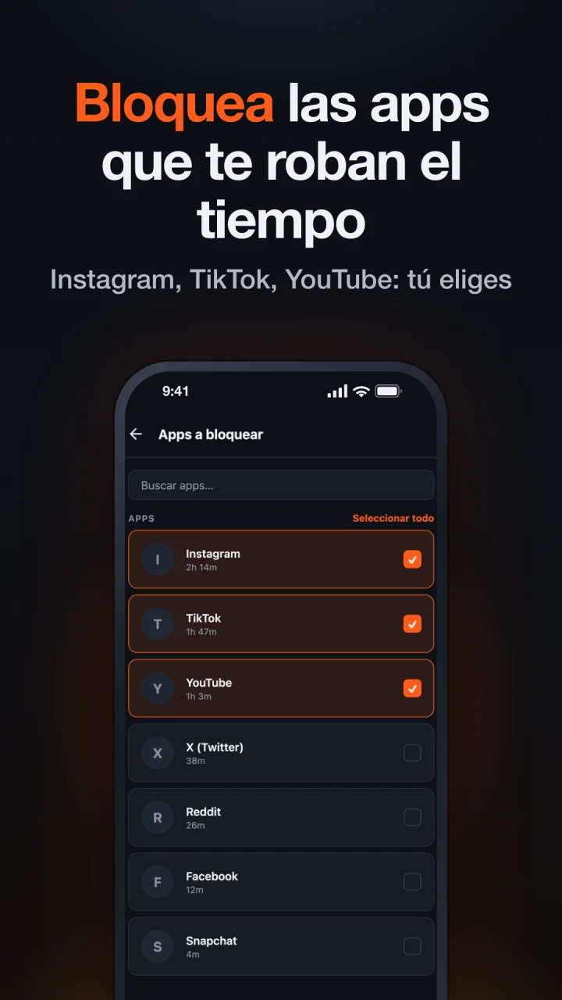

Bloquea Instagram hasta que hayas hecho tus flexiones
Instagram suele ser la primera app que la gente quiere bloquear, y es difícil bloquearla bien. Casi nunca aparece en el informe de tiempo de pantalla como una sesión enorme. Aparece como cuarenta cortitas: un vistazo rápido a una historia, contestar un mensaje, y luego veinte minutos de Reels que nunca pensabas abrir.
Así que esta página explica por qué Instagram es tan bueno en eso, y cómo configurarlo para que abrirlo cueste diez flexiones en lugar de un toque.
Por qué cuesta tanto soltar Instagram
La mayoría de las apps que distraen hacen una sola cosa. Instagram hace cuatro, y cada una te pasa a la siguiente:
- Los mensajes directos te dan una razón legítima para abrir la app. Alguien te mandó algo y contestar es lo educado.
- Las historias son cortas, avanzan solas, y los circulitos de arriba te dicen que siempre hay una que no has visto.
- Los Reels están a una pestaña de distancia y nunca se acaban.
- El feed y Explorar son lo que queda cuando los Reels empiezan a repetirse.
Esa cadena es el problema. Casi nunca abres Instagram con la intención de hacer scroll media hora. Lo abres por una razón real, normalmente un mensaje, y la app está hecha para convertir ese pequeño pendiente en una sesión. Un bloqueador que dice “hoy no hay Instagram” también te quita el pendiente, así que terminas apagándolo. Lo que funciona mejor es ponerle un precio pequeño y fijo a entrar, y dejar que el saldo se acabe mientras estás ahí.
Lo que hacen las flexiones y un temporizador no
Instagram tiene un límite diario integrado, y tu celular también tiene límites de apps. Los dos te detienen con un aviso que puedes descartar. A las 11 de la noche, descartarlo no cuesta nada, así que lo descartas.
Con flexiones, pasar el bloqueo cuesta algo que tienes que pagar con el cuerpo. Es un precio pequeño, pero es real. Algunas noches te vas a tirar al piso, harás diez y contestarás tus mensajes. Otras noches vas a ver la pantalla de bloqueo y te darás cuenta de que no querías Instagram tanto como para molestarte. De cualquier forma, abrir la app fue una decisión tuya.

Configúralo en iPhone
En iPhone solo Apple puede bloquear una app, así que HonorFit usa Tiempo de uso para el bloqueo.
- Abre HonorFit, toca Continuar para darle acceso a Tiempo de uso y aprueba el aviso de Apple.
- Toca Apps a bloquear y luego Abrir selector de apps. Es el selector de la propia Apple. Abre la categoría Redes sociales y marca Instagram. Puedes marcar la categoría completa, pero si solo quieres bloquear Instagram, elige solo esa app.
- Cierra el selector. Ahora Instagram muestra la pantalla de bloqueo de Apple hasta que te ganes tiempo.
- Para entrar, gira las ruedas de repeticiones en HonorFit, toca Registrar y el bloqueo se quita por los minutos que ganaste.
Apple mantiene tu selección en privado: le da a HonorFit una ficha anónima por cada app, no su nombre. Así que HonorFit puede bloquear Instagram sin saber qué app elegiste.
Configúralo en Android
- Abre HonorFit. En la tarjeta Permisos necesarios, toca Permitir junto a Acceso a datos de uso y actívalo para HonorFit, y luego haz lo mismo con Mostrar sobre otras apps. El primero le deja a HonorFit ver qué app está en pantalla, y el segundo le deja dibujar la pantalla de bloqueo.
- En Ajustes, en Funcionamiento en segundo plano, pon el uso de batería de HonorFit en Sin restricciones. Algunos celulares detienen las apps en segundo plano para ahorrar batería, y si eso le pasa a HonorFit, tus apps bloqueadas se desbloquean sin avisarte.
- Toca Apps a bloquear. Vas a ver tus apps instaladas, con las que usaste en las últimas 24 horas hasta arriba. Instagram casi seguro va a estar ahí. Márcala.
- La próxima vez que abras Instagram sin tiempo guardado, vas a ver “Instagram está bloqueada”. Toca Ganar más tiempo 💪 para ir directo a las ruedas de repeticiones.
Un tipo de cambio que le queda a Instagram
Por defecto, una flexión te da un minuto. Para Instagram yo lo dejaría así, por lo menos la primera semana:
- 10 flexiones = 10 minutos. Es suficiente para leer y contestar tus mensajes y ver las historias que te importan.
- Mantén tu saldo pequeño. La versión gratis guarda hasta 2 horas, pero no tienes que usarlas todas. Ganar diez minutos a la vez evita que juntes una hora de Reels en la mañana.
- El reloj solo corre dentro de Instagram. Si contestas un mensaje y te cambias a la cámara, el saldo deja de bajar. No tienes que apurarte.
Si pasa una semana y sigues terminando hundido en los Reels, hazlo más caro. Puedes cambiar lo que te da cada repetición en Ajustes, así que podrías poner las flexiones a 30 segundos cada una. También está el modo difícil, que reduce a la mitad cada repetición, y el modo enfermo, que la duplica para los días en que te sientes mal. Todo es gratis. Las sentadillas y los abdominales dan 30 segundos cada uno por defecto, así que son una forma fácil de que una sesión cueste más sin cambiar ningún ajuste.
No te olvides de los vecinos de Instagram
Pon atención a esto la primera semana. Cuando Instagram se vuelve más difícil de abrir, el hábito se muda a la app de al lado. Para algunas personas es Threads o Facebook, y para otras es el sitio web de Instagram en el navegador. Si notas que pasa, marca también la app vecina.
HonorFit solo puede bloquear apps. No te puede seguir a instagram.com en un navegador. Si ahí es donde terminas, los límites de sitios web que ya trae tu celular lo cubren.
Por qué no le puse cámara
Algunos bloqueadores con ejercicio cuentan tus repeticiones con la cámara frontal. HonorFit no. Giras una rueda para decir cuántas hiciste, y listo. Eso lo hace rápido de usar en una cocina o una oficina, y significa que no hay ningún permiso de cámara. También significa que puedes hacer trampa. Me parece bien: a quien engañarías es a la persona que instaló un bloqueador porque quería hacer más flexiones. Escribí más sobre esa decisión en un bloqueador de apps sin cámara ni IA.
HonorFit Blocker bloquea Instagram, o cualquier otra app que elijas, hasta que te la ganes con flexiones. Gratis en iPhone y Android. Sistema de honor, sin cámara, sin IA y nada sale de tu celular.